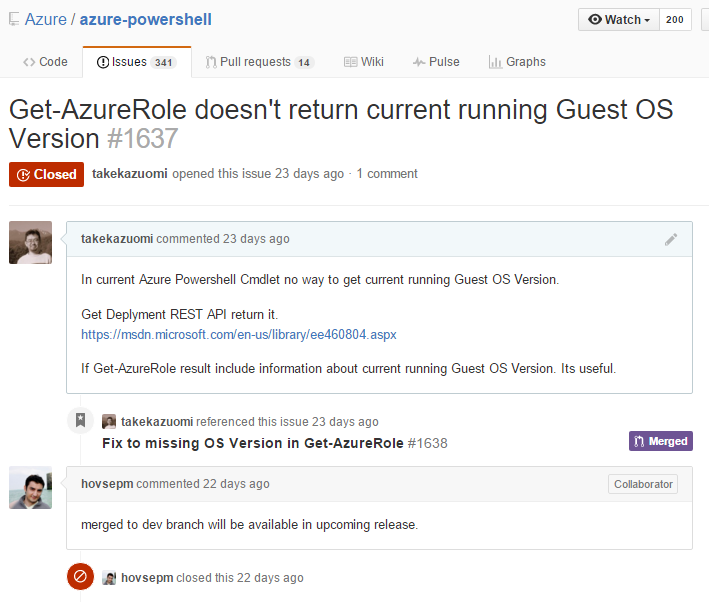

現在 のGuest OS Version の確認方法
.NET Framework 4.5, 4.5.1 のサポート終了に少し遅れましたが、Azure の Cloud Service でも、Gest OS 4.28 から .NET 4.5.2 がサポートされるようになりました。Azure Guest OS releases and SDK compatibility matrix
現在絶賛展開中ですが、手元のCloud Serviceには、すでに来ていました。
Visual Studio での確認
現在の Guest OSのバージョンは、下記のように、Visual Studio で、Roleのプロパティを開くと確認することができます。

Azure PowerShell での確認
Azure PowerShell は、1.1.0 では確認できなかったのですが、今回のように、GUEST OSのバージョンが重要な場合に確認出来ないのは不便なので、OSVersionが帰ってくるようなパッチを作って PR を出してみたら、さくっと翌日にはマージされ次のリリースで無事に現在のバージョンがわかるようになりました。（もともと、REST APIには存在するし簡単な修正だったので、なにかの拍子に漏れてしまっただけだと思います）
Fix to missing OS Version in Get-AzureRole #1638
Azure PowerShell Team オープンですね！素晴らしい
こんな感じで確認することができます。
$ Get-AzureRole -ServiceName kinmugics10 -Slot Staging
RoleName : WorkerRole1
InstanceCount : 1
DeploymentID : c49d5437f1a84345b9739a79ff333056
OSVersion : WA-GUEST-OS-4.28_201601-01
ServiceName : kinmugics10
OperationDescription : Get-AzureRole
OperationId : 0ffbd548-3b37-6c15-afa4-e091056e0849
OperationStatus : Succeeded
現状だと、「新ポータル、旧ポータル」では、適応されているcscfgの内容だけで、自動更新に設定されている場合にどのGuest OS が使われているかは確認できません。
おまけ、Get-AzureDeploymant
似たような情報を返してくるコマンドに、Get-AzureDeployment というのがあり、OSVersionが帰ってきます。「*」 が帰ってきて、すぐに実行中のGest OSがかえってくるわけではないことがわかりますが、ソースを確認してみます。コード的には、このあたりでOSVersion のプロパティを設定しています。つまり、csdefで設定されているosVersionが入り、自動更新を設定した場合、「*」となって現在のOS バージョンは分かりません。
最初これで行けるかと思ったんですがね。